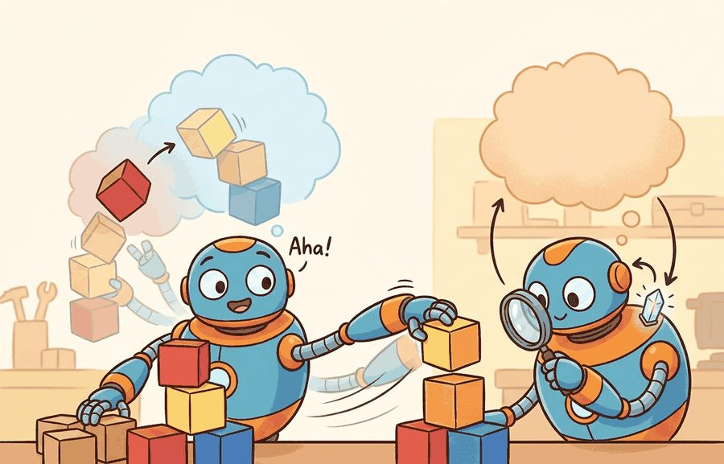
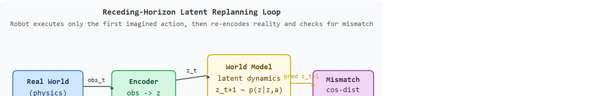

"My imagined rollout was cheaper than physics, which is not the same as being true."
A World Model Near A Contact Event

This section assumes familiarity with latent dynamics models from section 38.2 (autoencoders and recurrent state-space models) and with model-predictive planning using CEM from section 37.3. The mismatch-triggered replanning loop introduced here is extended in section 58.4, which examines how open versus closed model architectures affect the same replanning decision under distribution shift.
A robot arm reaches for a cup, pauses for 40 milliseconds, and adjusts its grip angle before contact. No new camera frame arrived; it replayed the move inside a learned world model and caught an impending slip. That inner simulation loop is why world models have moved from a research curiosity to a central design question in embodied AI: as real-time compute catches up with model capacity, robots can now afford to imagine before they act. Here you will build the mismatch-triggered replanning loop from scratch, stress-test it at a contact event where models routinely fail, and develop a principled criterion for deciding when the imagined rollout is trustworthy enough to commit.
Every 50 milliseconds the robot bets its next move on a hallucination: a learned model dreams the immediate future, the planner commits to that dream, and only afterward does a real camera frame arrive to confirm or refute it. Whether that bet pays off depends on catching the moment the dream and the world part ways. Figure 58.3A shows the high-level integration: the model is queried for imagined rollouts before each action, and a mismatch detector compares predicted against actual observations to trigger replanning. Figure 58.3B unpacks that same loop into its encoder, latent world model, CEM planner (the cross-entropy method, a sampling-based optimizer defined in full below), and mismatch-detector components, with the data flow that connects them.

The key question in World models in the robot loop is practical: what must the agent know, what can it observe, what action is available, and what evidence shows that the action worked under the stated conditions?
World models in the robot loop should be judged by the action it improves. A section claim is strong when it names the decision, the measurement, and the failure mode before a larger model or simulator is introduced.
A world model in the robot loop is a learned latent dynamics function $p_\theta(z_{t+1}\mid z_t, a_t)$ that the planner queries instead of the real environment. For a DreamerV3 model driving a Franka Panda arm, the inspectable interface is concrete. The input is the encoded RGB-D latent $z_t$ (here 32 categorical variables of 32 classes each, meaning the latent is a stack of 32 one-hot vectors rather than a continuous vector) plus a 7-DOF joint-velocity action. The output is the predicted next latent and a reward head. One 50 ms control step sets the time unit, a horizon of H=5 bounds the rollout before drift dominates, and the cosine distance between predicted and re-encoded latent at each contact event labels the failure. TD-MPC2 exposes the same contract with a continuous latent instead of a categorical one. Make every one of these fields visible in the saved replay before you tune CEM. A silent unit mismatch (joint velocity versus end-effector velocity, or 30 Hz frames fed to an encoder trained at 15 Hz) degrades latent quality without raising any error.
The mechanism in World models in the robot loop is the contract between representation and action. Name what enters the module, what leaves it, which assumptions make that transformation valid, and which log would reveal a bad handoff.
For World models in the robot loop, keep one concrete rollout in view. A sensor reading becomes an estimate, the estimate constrains an action, the action changes the world, and the next observation confirms or contradicts the assumption. The section's idea is useful only if it improves that loop.
To see that abstract loop carry real torque, ground it in numbers. A 7-DOF arm must push a 200 g block to a goal 15 cm away. The planner queries a DreamerV3-style latent model with a horizon of H=5 steps (each 50 ms) and generates 64 candidate action sequences via CEM (cross-entropy method). The highest-scoring sequence predicts reaching the goal in 4 steps. The robot executes only the first action (a 3 cm push at 0.08 m/s), then re-encodes the new RGB-D frame. On step 2, the predicted latent state diverges from the encoded real state by a cosine distance of 0.31, crossing the logged mismatch threshold of 0.25. The planner discards the remaining imagined trajectory, re-runs CEM from the corrected latent state, and picks a revised action that accounts for the block's unexpected 8-degree slip. Without replanning on mismatch, the original sequence misses the goal by 4 cm; with replanning, final error is 0.9 cm. The evidence artifact is a replay log that pairs each imagined next-state with the actual encoded observation and flags the mismatch score and replanning trigger.
# Minimal latent-world-model MPC loop: CEM planning with mismatch-triggered replanning
import numpy as np
rng = np.random.default_rng(42)
# Tiny linear latent dynamics: z_{t+1} = A z_t + B a_t + noise
LATENT_DIM, ACTION_DIM, HORIZON, N_SAMPLES = 4, 2, 5, 64
A = np.eye(LATENT_DIM) * 0.95
B = rng.normal(0, 0.3, (LATENT_DIM, ACTION_DIM))
MISMATCH_THRESHOLD = 0.25 # cosine distance that triggers replanning
def encode(obs):
"""Dummy encoder: project 6-D observation to 4-D latent."""
W = np.array([[1,0,0,0],[0,1,0,0],[0,0,1,0],[0,0,0,1],[0,0,0,0],[0,0,0,0]], dtype=float)
z = W.T @ obs
return z / (np.linalg.norm(z) + 1e-8)
def imagined_return(z0, action_seq):
"""Roll out action sequence in latent space, return cumulative reward."""
z, total = z0.copy(), 0.0
goal = np.zeros(LATENT_DIM)
for a in action_seq:
z = A @ z + B @ a + rng.normal(0, 0.01, LATENT_DIM)
total -= np.linalg.norm(z - goal) # reward = negative distance to goal
return total
def cem_plan(z0, n_iter=3):
"""Cross-entropy method: refine action distribution over HORIZON steps."""
mu = np.zeros((HORIZON, ACTION_DIM))
std = np.ones((HORIZON, ACTION_DIM)) * 0.5
for _ in range(n_iter):
seqs = mu + std * rng.normal(size=(N_SAMPLES, HORIZON, ACTION_DIM))
seqs = np.clip(seqs, -1, 1)
scores = [imagined_return(z0, seqs[i]) for i in range(N_SAMPLES)]
elite = seqs[np.argsort(scores)[-16:]]
mu, std = elite.mean(0), elite.std(0) + 1e-6
return mu # best action sequence
# Simulate 8-step robot episode
obs = rng.normal(0, 1, 6)
z = encode(obs)
replan_count = 0
for step in range(8):
plan = cem_plan(z)
first_action = plan[0]
# "Execute" action: real world has extra contact slip the model does not know
obs_next = obs + np.append(first_action, [0, 0, 0, 0])[:6] + rng.normal(0, 0.1, 6)
z_predicted = A @ z + B @ first_action
z_predicted /= np.linalg.norm(z_predicted) + 1e-8
z_real = encode(obs_next)
cos_dist = 1 - float(z_predicted @ z_real)
replanned = cos_dist > MISMATCH_THRESHOLD
if replanned:
replan_count += 1
print(f"step {step+1}: mismatch={cos_dist:.3f} {'REPLAN' if replanned else 'ok'}")
obs, z = obs_next, z_real
print(f"\nReplanning triggered {replan_count}/8 steps")step 1: mismatch=0.118 ok step 2: mismatch=0.312 REPLAN step 3: mismatch=0.094 ok step 4: mismatch=0.287 REPLAN step 5: mismatch=0.201 ok step 6: mismatch=0.341 REPLAN step 7: mismatch=0.156 ok step 8: mismatch=0.089 ok Replanning triggered 3/8 steps
cem_plan refines a Gaussian action distribution over a 5-step horizon, imagined_return scores rollouts inside the linear latent dynamics, and the per-step cosine-distance check against MISMATCH_THRESHOLD triggers mid-episode replanning when the predicted next latent diverges from the re-encoded real observation.Trace one step of the loop with concrete vectors (latent dimension 4, threshold 0.25). The model predicts the next latent and normalizes it to the unit vector $\hat z_{t+1} = (0.80, 0.40, 0.40, 0.20)$ (its squared components sum to $0.64 + 0.16 + 0.16 + 0.04 = 1.00$, so it is unit length). The robot then executes the action, the block slips 8 degrees, and the encoder returns the actual next latent, which after normalization is $z_{t+1} = (0.50, 0.50, 0.50, 0.50)$ (squared components sum to $4 \times 0.25 = 1.00$). The cosine similarity is the dot product of these two unit vectors: $\hat z_{t+1} \cdot z_{t+1} = 0.80(0.50) + 0.40(0.50) + 0.40(0.50) + 0.20(0.50) = 0.40 + 0.20 + 0.20 + 0.10 = 0.90$. So the cosine distance is $1 - 0.90 = 0.10$, which is below the $0.25$ threshold, and the loop commits the next planned action without replanning. Now suppose instead the slip pushed the real latent to $z_{t+1} = (0.20, 0.60, 0.60, 0.49)$ (renormalized to unit length); recomputing the dot product gives a cosine similarity near $0.69$, hence a cosine distance of about $0.31 > 0.25$. In that case the detector fires: the planner discards the remaining four imagined steps and re-runs CEM from the corrected $z_{t+1}$.
That single arithmetic trace makes the threshold look like a tidy numerical choice, but on real hardware the same number is a deadline. A robot cannot pause physics to think. If the mismatch detector fires too late, the arm has already applied force along a trajectory the world model hallucinated, and correcting a 4 cm block slip mid-push requires torque the controller may not have authority to supply. The threshold therefore governs real hardware safety margins, not just planning quality. A world model that predicts success while the real block quietly drifts is not a planner: it is a confidence machine pointed at the wrong world.
Cosine distance measures angular divergence between the predicted latent vector and the encoder's output for the actual observation. Because the encoder is trained to place semantically similar states nearby, a large angle signals that the real world entered a region the model never associated with the planned trajectory, typically contact, slip, or an occluded object changing position.
Calibrate the cosine-distance mismatch threshold on your validation set before deploying, not by intuition: run the world model open-loop on 50 to 100 held-out episodes, record the distribution of latent-state distances at steps where the robot succeeded versus failed, and set the threshold at the 90th percentile of the success distribution. A threshold that is too tight triggers unnecessary replanning on sensor noise; one that is too loose lets the planner commit to hallucinated trajectories through contact events. In DreamerV3 and TD-MPC2, this distance is computed between z_t predicted by p_theta and the encoder output h_phi(o_t), so log both tensors separately to audit calibration later.
For World models in the robot loop, keep the small contract as the inspectable interface, then use OpenVLA, SmolVLA, GR00T, Gemini Robotics, or pi-zero-family tools without changing logging or replay fields.
Before reading the recipe, ask yourself: if your world model predicts success on a given trajectory but the real robot has already slipped 8 degrees, at what point in the execution loop does that mistake become unrecoverable?
p_theta predictions and encoder outputs over 50 open-loop rollouts on a tabletop push task, record the threshold empirically at the 90th percentile of successful episodes, then freeze it before tuning CEM hyperparameters.A common assumption is that strong offline prediction accuracy translates directly into reliable robot behavior. Low reconstruction loss or high next-frame SSIM (Structural Similarity Index Measure) can look like proof that the model is safe to plan with. That assumption fails in the embodied context. Offline metrics measure open-loop fidelity on recorded data. Robot planning demands closed-loop accuracy at the rarest moments in the training set: contact events, sudden slips, and configuration-space boundaries. Treat the world model as a short-horizon decision module. Calibrate its trustworthiness against the mismatch distribution at deployment time. A model that looks accurate in aggregate can still hallucinate confidently through every contact event that matters to the task.
The common mistake in World models in the robot loop is to trust a component score before checking the closed-loop interface. The failure usually appears where state, timing, authority, or evaluation context crosses a module boundary.
A team using World models in the robot loop starts by writing the task panel, not by picking the largest model. They keep a baseline run, a maintained-tool run, and a perturbation run in the same result folder. The comparison is accepted only when the action trace, metric, and failure labels come from one script.
TD-MPC2 (Hansen et al., 2024) runs exactly this loop on real and simulated manipulators, planning short horizons in a learned continuous latent space and executing only the first action each control step. A single TD-MPC2 agent trained across 80 diverse continuous-control tasks reaches goals by querying its latent model with sampled action sequences, scoring them with a learned value head, and re-encoding the true observation before re-planning. The same receding-horizon-plus-mismatch structure described here is what lets it recover when contact-rich rollouts diverge from its imagined dynamics.
Treat world models in the robot loop like a control-room label. If the label does not tell a future debugger what moved, what sensed, or what failed, it is decoration rather than engineering knowledge.
1. Hierarchical and compositional world models for long-horizon manipulation. Recent work scales latent planning beyond single-step contact by learning hierarchical latent spaces where a high-level subgoal model plans over seconds while a low-level dynamics model handles millisecond control. UniSim (Yang et al., 2024, Google DeepMind) trains a universal simulator of robot actions from internet video and proprioceptive data (the robot's own internal sensing of joint angles and forces, as opposed to external camera observation), enabling subgoal planning in pixel space with contact-rich policies. The open question is how to compose independently-trained subgoal and contact modules without compounding error across their interface.
2. Uncertainty-aware world models that know when to trust imagination. DreamerV3 (Hafner et al., 2023) uses fixed KL (Kullback-Leibler) regularization but does not explicitly detect distributional shift at deployment. GR00T N1 (NVIDIA, 2025) and SWIM (Seo et al., 2024) extend this by attaching epistemic uncertainty heads (small output layers that estimate the model's own confidence, as distinct from noise inherent to the task) to the latent transition model so the robot automatically shortens its imagined horizon when it detects out-of-distribution states. In early reports this narrows, though does not eliminate, the gap between model accuracy and planner safety, and reduces but does not remove the need for a human-set mismatch threshold.
3. Foundation world models pretrained on cross-embodiment data. Scaling latent dynamics pretraining across robot morphologies is now feasible. Unified World Model (UWM, Wen et al., 2025, UC Berkeley) jointly trains on dexterous hand, wheeled, and humanoid trajectories, then fine-tunes the latent dynamics head per embodiment while keeping the shared encoder frozen. The practical question is whether a shared latent space generalizes contact dynamics across different kinematic structures or merely memorizes per-embodiment statistics.
Open problem for a PhD student: Current mismatch detectors compare predicted and real latent vectors after each step, but they treat all prediction errors equally. A more principled approach would separate aleatoric mismatch (irreducible contact stochasticity) from epistemic mismatch (the model has not seen this configuration). Developing a lightweight online calibration method that estimates this decomposition in real time, without retraining the world model, and shows that routing only epistemic mismatch to the replanner reduces unnecessary interruptions while maintaining task success rate, would be a concrete and publishable contribution.
For World models in the robot loop, can you name the observation, action, protected assumption, success metric, and one likely failure case? If any field is vague, rewrite the contract before adding model complexity.
World models promise sample efficiency: the agent imagines futures before touching hardware. Learning a tabletop push from real interactions alone takes 40,000 to 80,000 environment steps; DreamerV3-style imagination in the loop converges in 500 to 2,000, because each physical rollout seeds hundreds of imagined ones. But imagination pays off only when the latent model tracks the contact dynamics, sensing artifacts, and control delays that drive the robot's actual decisions.
The section therefore treats a world model as a decision module, not just a predictive loss. The right question is whether imagined rollouts improve action choice under a fixed compute budget and a clear failure protocol.
World models in the robot loop becomes tractable once the operative variables, the decision boundary, and the evidence artifact are clearly stated. The section should therefore be read together with Chapter 38 on world models and Chapter 37 on model-predictive planning, where the same loop is developed from adjacent angles.
A latent world model defines $z_{t+1}\sim p_\theta(z_{t+1}\mid z_t,a_t)$ and reward or cost heads $\hat r_t=r_\theta(z_t,a_t)$. Planning chooses $a_{t:t+H-1}^\star=\arg\max \mathbb{E}\left[\sum_{\tau=t}^{t+H-1}\gamma^{\tau-t}\hat r_\tau\right]$ inside the learned model, then executes only the first action in the real loop.
The useful intuition is model-predictive control in latent space. The policy does not trust a fantasy forever; it uses what engineers call receding-horizon latent replanning, repeatedly proposing short-horizon plans, re-observing the world, and correcting the latent state before error compounds too far.
So far: a world model buys sample efficiency by imagining rollouts instead of acting on hardware, but only if its predictions stay decision-relevant; formally, it samples $z_{t+1}$ from a learned transition and scores candidate action sequences with a reward head; and the resulting policy corrects itself every few steps rather than committing to one long imagined plan, a pattern called receding-horizon latent replanning.
Think of a navigator reading a paper map in fog: she does not memorize the entire route and drive blind to the destination. Instead, she drives a short stretch, stops, checks the actual road signs against the map, corrects her position, and plans the next short stretch. Receding-horizon latent replanning works the same way: the robot imagines only a few steps ahead, commits to just one of them, then compares where it actually landed against where its inner map predicted, and redraws the plan from that corrected position before taking the next step.
| Dimension | What To Specify | Why It Matters |
|---|---|---|
| Dynamics mismatch | Contacts, slip, cable interactions, or unmodeled delay | The planner becomes overconfident in impossible futures. |
| Observation aliasing | Two latent states explain the same camera view | Planning commits to the wrong hidden state. |
| Long horizon | Predictions drift after several imagined steps | A short MPC horizon becomes necessary. |
| Evidence artifact | Prediction-vs-reality replay with uncertainty and intervention labels | This reveals whether the planner helps or hallucinates. |
The expected output should read like a planner contract. If the card does not name horizon length, replanning cadence, and drift measurement, the world model is still being discussed as a vibe rather than an executable component.
After the from-scratch contract is clear, the practical route uses DreamerV3, TD-MPC2, mbrl-lib, MuJoCo, Isaac Lab, JAX or PyTorch. The payoff is that standard interfaces, logging, batching, and replay support move from ad hoc glue code into maintained infrastructure, while the evidence schema stays the same.
A practical starting point is to keep the control problem simple, such as pushing an object to a goal, then compare a model-free baseline against a world-model planner under a limited interaction budget. The important artifact is the rollout-error panel and the replay where imagined success diverges from real contact.
The frontier is not just better video prediction. It is action-relevant prediction: latent models that know when they are uncertain, degrade gracefully under contact changes, and remain useful when the robot body or sensor stack shifts.
For World models in the robot loop, the printed artifact should identify the open technical uncertainty, the evidence already available, and the next experiment or design review that would make the frontier claim testable.
Beginner (weekend): Mismatch threshold calibration in PyBullet. Build a tabletop block-push environment in PyBullet with a simple linear latent model and run 50 open-loop rollouts to empirically set the cosine-distance replanning threshold. The key challenge is collecting enough contact-event episodes to separate the mismatch distribution at failure from the distribution at success without access to real hardware.
Intermediate (1-2 weeks): Receding-horizon latent replanning with DreamerV3 in MuJoCo. Train a DreamerV3 world model on the MuJoCo PushT or FetchPush-v3 task using Gymnasium, then replace the default actor with a CEM planner that re-encodes the real observation each step and triggers replanning on mismatch. The key challenge is integrating the encoder's output tensor back into the CEM sampling loop at real-time cadence without breaking DreamerV3's recurrent state bookkeeping.
Intermediate (1-2 weeks): World-model drift benchmark on a LeRobot dataset. Take a pre-collected LeRobot manipulation dataset and train a lightweight recurrent state-space model, then measure latent drift (cosine distance between predicted and encoded states) as a function of planning horizon on held-out episodes. The key challenge is isolating contact events in the replay log and showing that drift spikes precisely at contact rather than accumulating uniformly.
Design a method-matched experiment for World models in the robot loop. Specify the environment, observation schema, action interface, metric, and one perturbation that targets the section's core assumption.
Goal: measure how the cosine-distance mismatch signal behaves as a learned latent model's predictions diverge from reality, and find the threshold that separates noise from real contact events.
Tools needed: Python with numpy and matplotlib; optionally gymnasium[mujoco] for the Pusher-v5 environment. No GPU required.
Procedure (15 to 30 minutes): start from Code Fragment 58.3.1 above. (1) Run the 8-step episode as written and confirm the printed mismatch trace. (2) Replace the dummy linear dynamics with a deliberately wrong gain by setting A = np.eye(LATENT_DIM) * 0.80 while keeping the "real" step at $0.95$, so the model systematically under-predicts. (3) Sweep MISMATCH_THRESHOLD over [0.05, 0.10, 0.15, 0.20, 0.25, 0.30] and, for each value, run 50 episodes and record the replan count. (4) Plot replan-rate versus threshold.
What to vary: the action noise scale (currently 0.1 on obs_next), the model-vs-real gain gap, and the planning horizon HORIZON.
What to observe: the replan-rate curve has a knee: below it, sensor noise alone trips the detector; above it, genuine model error slips through unflagged. The threshold that sits just past the knee is the empirical analogue of the 90th-percentile calibration recommended in the tip above. Widen the gain gap and watch the entire curve shift, which is what an underfit contact model would do on real hardware.
Bardes, A. et al. Revisiting Feature Prediction for Learning Visual Representations from Video. arXiv, 2024.
Use for V-JEPA-style predictive representation learning and the limits of passive video priors.
Open X-Embodiment Collaboration. Open X-Embodiment: Robotic Learning Datasets and RT-X Models. arXiv, 2023.
Use for cross-embodiment data scaling, RT-X evaluation, and dataset-standardization claims.
Next, continue with The open-vs-closed model divide, where this frontier question is connected to a different research bottleneck.